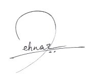
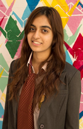

| |
Dear Delegates and Faculty Advisors,
It is my utmost privilege to welcome you all to the Third Session of the Cambridge Model United Nations, scheduled from 20th to 22nd February 2014. After an immensely successful Second session, applauded by the UN Resident Coordinator, I could not be more excited to embark on yet another simulation of distinguished United Nations bodies and diverse international organisations. Our team has already begun conference preparations and we are keenly looking forward to welcoming you all to Abu Dhabi next February.
Driven with the ultimate aim of taking further steps in the establishment of an equitable world order, this year’s theme – “In the Name of Peace: En route to Justice and Equality” focuses on approaches to eradicate today’s problems for a better tomorrow. Martin Luther King once said, “Injustice anywhere is a threat to justice everywhere.” Justice and equality are two sides of the same coin, said coin being ‘Peace’. An absence of peace leads to human rights violations and the denial of justice and equality. Is world peace Utopian myth? Does law always bring justice? Is it possible to achieve equality? This year’s conference will try to answer these questions and inspire you all to work towards an equitable society.
Delegates, I call upon you to unlock the potential prospects of your individual imaginations and combine them to form probable solutions to the crises and discussions that you shall face.
Eagerly expecting to meet you all at CAMUN 2014!
Sincerely,

Mehnaz Mahmood,
Secretary-General,
Cambridge Model United Nations 2014
|
 |